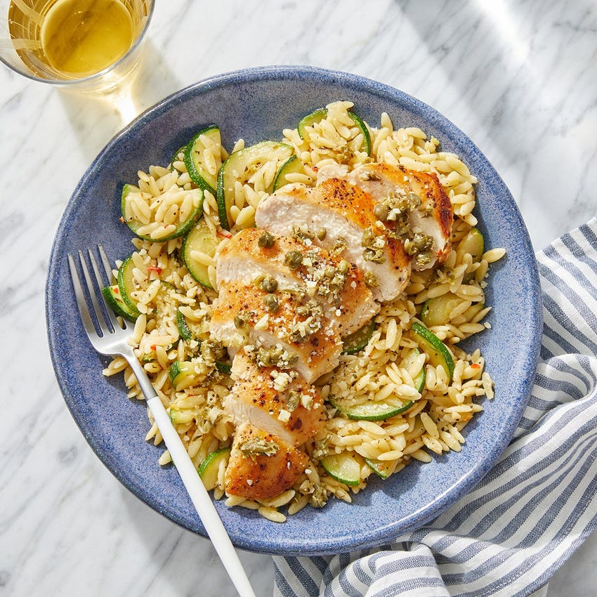

Garlic Caper Chicken
Ingredients
- 2 boneless skinless chicken breast
- 1 lemon
- 1.5 tsp of chile paste
- 4 oz orzo pasta
- 2 cloves of garlic
- 1/4 cup of parmesan cheese
- 1 tsp of oregano
- 1 zucchini
- 1 tablespoon of capers
- 2 tablespoons of creme fraiche
Method
- Fill a medium pot 3/4th with salted water and heat to boil.
- Halve teh zucchini lengthwise, then thinly slice crosswise.
- Peel and roughly chop the garlic.
- Roughly chop the capers.
- Quarter and deseed the lemon.
- Add pasta to pot of boiling water, cook for 9 minutes.
- In a medium pan, cook the zucchini in 2 tsp olive oil.
- When zucchini is lightly browned add half the chopped garlic and chile paste, thoroughly combine, remove from pan.
- Dry the chicken and put in bowl
- Add to a bowl along with drizzle of olive oil, oregano, basil, salt and pepper. Thoroughly coat.
- In the same pan used for zucchini, cook the chicken on medium high heat, 6 to 7 minutes per side, remove from pan.
- In the pan of reserved fond, heat drizzel of olive oil on medium high heat
- Add capers and remaining choppped garlic and juice of two lemon wedges, remove from heat
- To the pasta, add zucchini, creme fraiche, juice of remaining lemon wedges and chopped chicken and garlic caper topping
- split into two portions and serve
